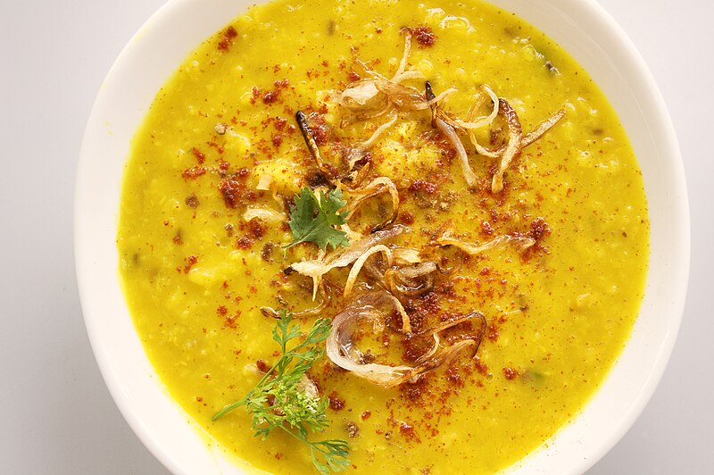

Moong Dal

Description
Ingredients
- 2 ½ cups moong dal (split husked mung beans)
- 2 ½ cups water
- 1 ½ teaspoons salt
- ½ teaspoon grated fresh ginger root
- 1 teaspoon diced jalapeno chile pepper
- ½ cup diced tomatoes
- 3 teaspoons lemon juice
- ½ teaspoon ground turmeric
- 2 teaspoons vegetable oil
- 1 teaspoon cumin seed
- ½ dried red chile pepper
- 1 pinch Asafoetida
- 2 cloves garlic, finely chopped
- ¼ cup chopped fresh cilantro
Steps
- Rinse the dal, checking for any debris; add to saucepan with 2 1/2 cups water. Allow to soak for 30 minutes.
- Bring dal, water, and salt to a boil. Reduce heat to medium-low and cook until beans are very tender and mixture has thickened, 15 to 20 minutes. Add more water, if necessary, to prevent drying out. Stir in ginger, jalapeno pepper, tomato, lemon juice, and turmeric.
- Heat oil in a small saucepan and add cumin seed and red chile pepper. When pepper is heated, add Asafoetida powder and garlic. Stir mixture into split peas and add cilantro; mix well.
Home